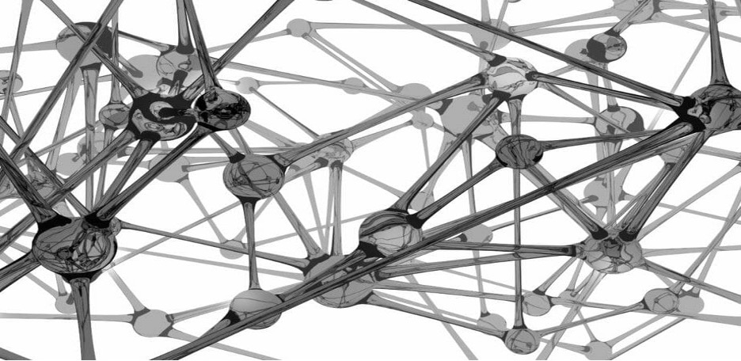
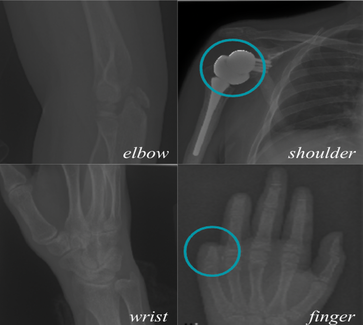

Phase I | Project Pitch
MURA X-Ray Classification Using Deep Learning

Project Introduction
Musculoskeletal disorders constitute of pains or injuries in the joints, muscles, nerves and tendons that support limbs, neck and back.
Worldwide more than 1.7 billion people are affected by them and is considered as the 2nd greatest cause of disability.
Our project features MURA, a musculoskeletal radiograph dataset.
The study was conducted on various areas of the body, the elbow, finger, hand, humerus, forearm, shoulder, and wrist.
Radiologists all around the world have examined and manually labeled these images as normal or abnormal.
We intend to create a deep-learning model that can reliably classify the images in two ways, abnormality detection and body part classification.
Our end product will be deployed using a Web API (user interface) and the user will be able to upload the X-ray images to identify abnormality or lack thereof.
We requested the data from the Stanford University ML Group.
The dataset consists of 11,967 patients, approximately 40,000 images, 4 studies, and 5 fields,
which are defined in the data dictionary.
Data Dictionary
| Field |
Data Type |
Description |
| image |
file |
medical radiography image |
| patient_id |
text |
unique identifier |
| study |
integer |
how many times the image has been studied to classify |
| study_type |
integer |
binary abnormality detection indicator |
| region |
text |
body part depicted in the image |
There are fourteen unique image types between the seven different body parts and two study type categories.
The image matrix contains examples of the images we are analyzing for our project.
The blue circles indicate abnormality, so the left column displays images classified as normal,
whereas the right column displays images classified as abnormal.
Image Matrix

Previously, the analyses conducted on the MURA dataset only classified the images as normal or abnormal.
They built a neural network, as the data consists of X-ray images, which they used to make predictions.
The model evaluation was based on comparing the accuracies with the best and worst performances of six
board-certified Stanford radiologists.
Accuracy Score Table
As you can see from the accuracy score table, model performance
is similar to that of the best radiologist performance when attempting to classify an image displaying a
finger or wrist. However, models had poorer performance than the worst radiologist when attempting to classify
an image displaying a forearm, humerus, or shoulder.Please note that the values in the parentheses are the accuracy scores for the classification of normal versus abnormal images.
The main accuracy score is the average of those two values.
We intend to create a classification model with a performance that either meets or exceeds the accuracy rate
of the best performing radiologist, 77.8%. To access the scholarly journal article containing more detail about the
previous modeling conducted on the MURA dataset, click the button below.